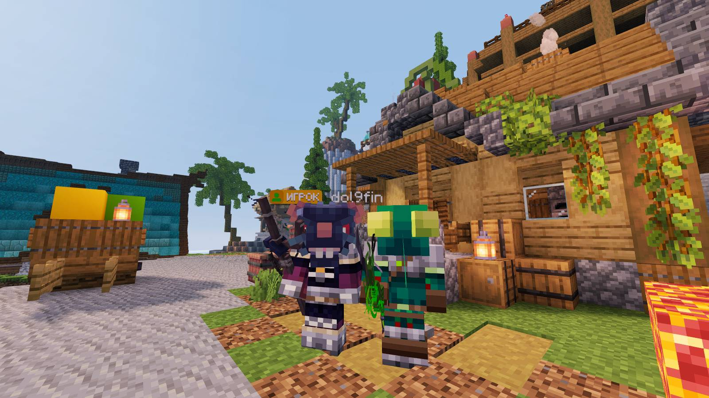

Гайды / Бой
Классы, сеты и умения
Четыре стиля боя, больше 70 сетов брони шести уровней, 100 аксессуаров, мана и умения оружия.

Классы урона
Классов как профессий здесь нет — ты становишься тем, что носишь. Каждое оружие и сет относятся к одному из стилей боя:
| Стиль | Оружие | Главная характеристика |
|---|---|---|
| Воин | Мечи, топоры, копья, катаны | Урон ближнего боя |
| Стрелок | Луки, арбалеты, огнестрел | Урон дальнего боя, экономия снарядов |
| Маг | Посохи, книги, жезлы | Магический урон, мана |
| Призыватель | Тотемы и посохи призыва | Урон миньонов, число миньонов |
Сет усиливает урон своего стиля. Носить можно что угодно, но бонусы работают только у полного комплекта.
Сеты брони
Сеты бывают шести уровней. Полный сет из четырёх частей даёт:
- бонус к урону своего стиля (от +5% на 1 уровне до +18% на 6-м);
- защиту, здоровье, ману, шанс крита или уклонение;
- особый эффект: иммунитет к огню, невидимость в лесу, отравляющие снаряды, щит при низком здоровье, силу днём или ночью.
| Уровень | Примеры сетов |
|---|---|
| 1 | Король гоблинов, Костяной легионер, Шаман гоблинов, Призрак, Крысиный король |
| 2 | Тёмный рыцарь, Пират, Маг, Культист, Медвежий берсерк |
| 3 | Они, Эльфийский клинок, Тэнгу, Король фантомов, Онмёдзи |
| 4 | Варден, Пепельный страж, Огненный ифрит, Глубинный оракул, Кракен |
| 5 | Теневой колосс, Адамантовый титан, Охотник Пустоты, Астральный звездочёт, Владыка душ |
| 6 | Солнечный паладин, Солнечное око, Солнечный архимаг, Солнечный пастырь |
Сеты выбивают из мобов и боссов, находят в подземельях и куют в кузне.
Характеристики
Всё, что дают сеты и аксессуары:
| Группа | Характеристики |
|---|---|
| Атака | Урон, урон ближнего и дальнего боя, магический урон, урон призыва, шанс и урон крита, отбрасывание, скорость атаки |
| Защита | Броня, прочность брони, здоровье, снижение урона, уклонение, шипы, стойкость, регенерация, вампиризм |
| Ресурсы | Мана, восстановление маны, экономия маны, экономия боеприпасов, число миньонов |
| Прочее | Скорость, прыжок, высота шага, безопасное падение, дыхание, скорость копки, удача, опыт |
Свои характеристики можно посмотреть в окне снаряжения.
Умения оружия
У особого оружия есть умения, привязанные к клавишам:
- ЛКМ — быстрая атака-умение;
- ПКМ — основное умение;
- F — сильное умение с долгой перезарядкой;
- Shift + F — ультимативное умение у некоторых видов оружия.
Многие умения работают только в полном сете своего класса. Перезарядка и стоимость маны видны над хотбаром.
Пустой рукой Shift + F открывает окно снаряжения.
Мана
У каждого игрока есть мана — база 20 единиц. Её тратят умения магов и призывателей.
- Мана восстанавливается сама каждую секунду.
- Сеты магов увеличивают запас и скорость восстановления, некоторые аксессуары — экономят ману.
- Многие сеты возвращают ману за убийства.
Аксессуары
Кроме брони есть три слота аксессуаров: кольца, амулеты, талисманы, когти, перья, руны. Всего их 100.
- Открой окно снаряжения:
/equipили Shift + F пустой рукой. - Перетащи аксессуар в свободный слот.
- Два одинаковых аксессуара не надеть.
Аксессуары выпадают из мобов. Например, Медвежья лапа — из белых и бурых медведей, Проклятая плоть — из зомби, Золотая нить — из кадавров, Ритуальная кость — из зомби-жителей.
Синергия
Многие аксессуары получают дополнительный бонус, если на тебе сет подходящего стиля. Например, Медвежья лапа сильнее отбрасывает врагов, а с сетом воина даёт ещё и стойкость.
Миньоны
Призыватели сражаются чужими руками. Умения призыва вызывают духов и существ, которые атакуют твоих врагов. Сколько миньонов можно держать одновременно, зависит от сета. Миньоны не трогают тебя и союзников.
Донатные сеты
Девять классов из магазина — Рыбак, Собиратель, Фермер, Акула, Шаман Тики, Чёрный рынок, Самурай, Кицунэ и Полярник. У каждого своя механика и оружие. По силе они примерно равны крафтовым сетам 4–5 уровня, а лучшие сеты сервера добываются только игрой.
Команды
/equip | окно снаряжения и аксессуаров |